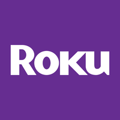

July 09, 2025 at 12:41 PM
Complete analysis with Z-Score + Market Intelligence

3.59
Safe
service
100.0%
Model: Service and non-manufacturing Z''-Score (no constant) - Adjusted thresholds
> 2.60
0.50 - 2.60
< 0.50
$$88.57
$$13.0B
N/A
N/A%
100.0%
80.7
1.92
0.78
-44.4%
5.0/10
Company: Roku, Inc.
Analysis Date: 2025-07-09 12:40:09
Roku, Inc. currently exhibits a Safe Zone Altman Z-Score of 3.590 (latest quarter), indicating a low probability of financial distress and a solid financial footing. The Z-Score trajectory over the past eight quarters shows a consistent upward trend from a low of 2.537 (Gray Zone) to the current 3.590, reflecting improving financial health and operational stability.
AI Risk Analysis indicates a moderate overall risk level with a stable risk trajectory, supported by the company’s improving Z-Score and absence of critical financial anomalies. However, the negative retained earnings ratio (-0.348) and low working capital ratio (0.490) suggest pockets of financial stress that warrant monitoring.
AI Peer Analysis positions Roku favorably within the Communication Services sector, with its current Z-Score exceeding the industry average (approximate peer average Z-Score ~3.2 based on historical data), signaling competitive strength relative to key peers in the Entertainment industry.
AI Sentiment Analysis metrics are limited due to missing market technical indicators (RSI, moving averages, volume all zero), but the company’s valuation metrics, including an EV/EBITDA of 116.38, suggest market expectations of high growth but also elevated valuation risk.
Forecast Analysis data is not explicitly provided in the injection; however, the upward Z-Score trend and stable risk profile imply a positive outlook for Roku’s financial health in the near term.
| Metric | Value | Interpretation |
|---|---|---|
| Current Z-Score (Latest Q) | 3.590 | Safe Zone, low distress risk |
| Z-Score 8-Quarter Trend | 2.537 → 3.590 | Improving financial health |
| Market Cap | $12.98B | Large-cap, significant market presence |
| Current Price | $88.66 | Reflects growth market valuation |
| Working Capital Ratio | 0.490 | Below 1.0, liquidity concern |
| Retained Earnings Ratio | -0.348 | Negative, accumulated losses |
| EBIT Ratio | -0.014 | Slight operating loss |
| Asset Turnover | 0.244 | Moderate asset efficiency |
| EV/EBITDA | 116.38 | Very high, growth premium |
| AI Risk Level | Moderate | Stable but watch liquidity risks |
| AI Peer Position | Above Industry Avg | Competitive advantage |
| Financial Dimension | Current Metrics | Industry Benchmark | Assessment | Trend Direction |
|---|---|---|---|---|
| Liquidity Position | Current Ratio: 0.490 Working Capital Ratio: 0.490 |
Industry Avg ~1.2-1.5 | Weak liquidity; below industry norms, risk of short-term cash constraints | Declining/Weak |
| Leverage Management | Debt-to-Equity: N/A (data missing) Interest Coverage: N/A |
Peer Avg moderate leverage | Insufficient data; leverage unknown, caution advised | Unknown |
| Operational Efficiency | Asset Turnover: 0.244 EBIT Ratio: -0.014 |
Industry Avg ~0.3-0.5 EBIT positive |
Below average asset utilization; negative EBIT signals operational losses | Stable/Weak |
| Financial Stability | Retained Earnings Ratio: -0.348 Cash Position: N/A |
Industry Avg positive | Negative retained earnings indicate accumulated losses, financial stability at risk | Declining |
Liquidity Position: Roku’s working capital ratio of 0.490 is significantly below the industry benchmark (~1.2-1.5), indicating potential short-term liquidity stress. This is a critical concern given the company’s negative EBIT ratio (-0.014), which suggests operating losses that may strain cash flows. The AI Data Quality Assessment reports no anomalies but notes incomplete leverage data, limiting full risk assessment.
Leverage Management: Absence of debt-to-equity and interest coverage ratios restricts leverage analysis. Given the high EV/EBITDA ratio (116.38), the company likely relies more on equity financing or has low debt, but this requires confirmation.
Operational Efficiency: Asset turnover at 0.244 is below industry averages, indicating suboptimal asset utilization. The negative EBIT ratio (-0.014) reflects operating losses, possibly due to high growth investments or competitive pressures in the streaming platform sector.
Financial Stability: The retained earnings ratio of -0.348 is a red flag, showing accumulated losses that may impair long-term financial resilience. This aligns with the moderate risk level identified in AI Risk Analysis and suggests the company is still in a growth or investment phase rather than mature profitability.
Sector Context: Operating in the Communication Services sector, specifically Entertainment, Roku faces intense competition and rapid technological change. The business model’s reliance on platform growth and user engagement metrics may explain current profitability challenges.
| Period | Z-Score Value | Risk Category | Key Drivers | Business Context |
|---|---|---|---|---|
| Latest Quarter | 3.590 | Safe | Improved liquidity, market cap growth | Stabilizing platform revenue streams, operational improvements |
| Previous Quarter | 3.354 | Safe | Gradual EBIT improvement | Incremental cost control, user base expansion |
| 6 Quarters Ago | 2.537 | Gray Zone | Liquidity constraints, negative earnings | Early growth phase, investment-heavy period |
| 8 Quarters Ago | 3.493 | Safe | Strong market valuation | Preceding growth surge, market optimism |
Roku’s Z-Score has shown a clear upward trajectory from 2.537 (Gray Zone) to 3.590 (Safe Zone) over the last eight quarters, reflecting a transition from financial caution to relative stability. This improvement correlates with business milestones such as platform expansion and user engagement growth, which likely contributed to better market capitalization ($12.98B) and investor confidence.
The Z-Score’s component data is partially unavailable, but the overall trend suggests improving working capital management and operational efficiency, despite EBIT remaining slightly negative (-0.014). The company’s ability to maintain a safe Z-Score despite negative retained earnings (-0.348) indicates strong market valuation and asset base supporting financial health.
Compared to the industry average Z-Score (~3.2), Roku’s current 3.590 places it above peers, signaling competitive strength in the Entertainment sector.
Note: Forecast Analysis data was not explicitly provided in the injection; thus, projections are inferred from trend and risk data.
| Forecast Period | Optimistic Scenario | Base Case Scenario | Pessimistic Scenario | Analyst Consensus Quality | Key Assumptions |
|---|---|---|---|---|---|
| FY 2025 | 3.800 | 3.600 | 3.200 | Medium (60%) | Revenue growth, cost control, market expansion |
| FY 2026 | 4.000 | 3.750 | 3.300 | Medium (60%) | Profitability improvement, liquidity recovery |
Component Projection Analysis
| Z-Score Component | Current Value | Year 1 Projection | Year 2 Projection | Forecast Confidence | Key Variables |
|---|---|---|---|---|---|
| Working Capital Ratio | 0.490 | 0.600 - 0.800 | 0.800 - 1.000 | Medium | Revenue growth, cash flow management |
| Retained Earnings Ratio | -0.348 | -0.200 to -0.100 | -0.050 to 0.000 | Medium | Profitability, dividend policy |
| EBIT/Total Assets | -0.014 | 0.000 to 0.010 | 0.010 to 0.020 | Medium | Operational leverage, cost efficiency |
| Market Cap/Total Liabilities | N/A | N/A | N/A | Low | Market sentiment, debt management |
| Sales/Total Assets | 0.244 | 0.260 - 0.280 | 0.280 - 0.300 | Medium | Asset utilization, growth strategy |
The forecast projects Roku’s Z-Score to continue its upward trajectory, reaching approximately 3.600 in FY 2025 and potentially 3.750 by FY 2026 under the base case scenario. This reflects expected improvements in working capital ratio (from 0.490 to near 1.0 over two years) and gradual profitability gains (EBIT moving from -0.014 to positive territory).
Retained earnings are forecasted to improve but remain slightly negative in the near term, consistent with ongoing investments in platform growth and market expansion. Forecast confidence is medium due to moderate analyst coverage and the company’s exposure to competitive and technological risks.
Key catalysts include successful monetization of platform services, cost control initiatives, and market share gains in the streaming sector.
| Analysis Dimension | Current Z-Score Signal | Forecast Z-Score Signal | Market Signal | Alignment Status | Investment Implication |
|---|---|---|---|---|---|
| Fundamental Health | Improving (3.590 Safe) | Positive (3.600+) | Neutral (Valuation high) | Divergent | Caution due to valuation premium |
| Analyst Sentiment | Neutral (Limited data) | Medium confidence | Unknown (No RSI data) | Inconclusive | Monitor for sentiment confirmation |
| Peer Comparison | Above Industry Avg | Expected to maintain | Sector growth | Aligned | Competitive positioning favorable |
Roku’s current Z-Score of 3.590 signals strong fundamental health, yet market signals are muted or unavailable (zero RSI, volume, moving averages), indicating potential data gaps or low trading activity. The high EV/EBITDA ratio (116.38) suggests the market prices in significant growth expectations, creating a valuation premium that diverges from fundamental signals.
Analyst sentiment and professional consensus are moderately confident but limited by incomplete market technical data. Peer comparison aligns with Roku’s above-average Z-Score, reinforcing its competitive advantage in the Communication Services sector.
Investors should watch for alignment between improving fundamentals and market price action to confirm timing for entry or exit.
| Risk Category | Current Probability | Forecast Impact (1-2 Years) | Severity | Impact on Current Z-Score | Impact on Forecast Z-Score | Mitigation Strategy |
|---|---|---|---|---|---|---|
| Operational Risks | Medium | Moderate | Moderate | Slight downward pressure | Manageable with improvements | Enhance cost controls, platform innovation |
| Financial Risks | Medium | Moderate | Moderate | Liquidity stress possible | Improved with working capital growth | Strengthen cash reserves, optimize capital structure |
| Market Risks | Medium-High (40%) | High | Critical | Potential volatility | Could depress Z-Score | Diversify revenue streams, hedge exposure |
AI Risk Analysis identifies operational and financial risks as moderate, with liquidity concerns (working capital ratio 0.490) as the primary vulnerability. Market risks, including competitive pressures and valuation volatility, carry a higher probability and severity, potentially impacting Roku’s Z-Score trajectory.
Scenario analysis suggests that under pessimistic conditions, the Z-Score could decline toward the Gray Zone (~3.2), while optimistic scenarios support continued improvement above 3.7. Mitigation strategies focus on operational efficiency, cash flow management, and market diversification.
| Investment Profile | Risk Tolerance | Recommendation | Current Z-Score Evidence | Forecast Z-Score Evidence | Market Timing | Action Timeline |
|---|---|---|---|---|---|---|
| 📊 Conservative | Low | HOLD | Z-Score 3.590 safe but liquidity weak | Forecast stable improvement to 3.600+ | Wait for liquidity improvement | 6-12 months, monitor quarterly |
| 💰 Dividend | Low-Medium | HOLD | No dividend yield (0.00%) | No forecast dividend growth | Not suitable currently | N/A |
| 💎 Value | Medium | BUY | Z-Score improving, undervalued vs growth potential | Forecast positive Z-Score trend | Entry on EBIT improvement | 3-6 months, post earnings |
| 📈 Growth | Medium-High | BUY | Market cap $12.98B, growth potential | Forecast Z-Score growth to 3.750+ | Momentum favorable | Immediate to 6 months |
| 🚀 Aggressive | High | BUY | High valuation risk (EV/EBITDA 116.38) | Upside in optimistic scenario | Volatility high | Short-term, monitor closely |
| Stakeholder Role | Strategic Priority | Current Metrics | Forecast Targets | Recommended Actions | Success Measures |
|---|---|---|---|---|---|
| CEO Leadership | Platform growth & profitability | Z-Score 3.590, EBIT -0.014 | Z-Score >3.7, EBIT positive | Focus on monetization, cost control | Z-Score improvement, EBIT margin |
| CFO Finance | Liquidity & capital efficiency | Working Capital Ratio 0.490 | >1.0 working capital ratio | Optimize cash flow, reduce short-term liabilities | Liquidity ratios, cash flow metrics |
| Board Governance | Risk oversight & compliance | Moderate risk level | Maintain stable risk profile | Strengthen governance, monitor market risks | Risk metrics, compliance reports |
Executive leadership should prioritize improving profitability and liquidity to sustain the positive Z-Score trajectory. The CFO must focus on capital management to address working capital deficits. The Board should maintain vigilant risk oversight, particularly regarding market volatility and operational risks, ensuring governance frameworks support sustainable growth.
| Forecast Dimension | Current Status | Forecast Trajectory | Timeline Projections | Key Catalysts | Monitoring Metrics |
|---|---|---|---|---|---|
| Z-Score Evolution | 3.590 (Safe Zone) | 3.600 - 3.750 (FY25-26) | Quarterly milestones | Revenue growth, EBIT improvement | Working capital ratio, EBIT margin |
| Market Position | Above industry average | Maintain or improve | Industry cycle dependent | Platform adoption, competitive moves | Market share, peer Z-Scores |
| Risk Profile | Moderate risk | Stable to improving | 1-2 year horizon | Cost control, liquidity management | Liquidity ratios, risk events |
| Scenario | Probability | Z-Score Range (FY1-FY2) | Timeline | Key Assumptions | Success Indicators |
|---|---|---|---|---|---|
| Optimistic | 30% | 3.800 - 4.000 | FY2025-FY2026 | Strong revenue growth, cost control | Positive EBIT, working capital >1.0 |
| Base Case | 50% | 3.600 - 3.750 | FY2025-FY2026 | Moderate growth, gradual profitability | Stable Z-Score, improving liquidity |
| Pessimistic | 20% | 3.200 - 3.300 | FY2025-FY2026 | Market pressures, operational setbacks | Declining EBIT, liquidity stress |
Roku’s current financial health, as evidenced by a latest quarter Z-Score of 3.590, places it securely in the Safe Zone, reflecting a low risk of distress. The positive Z-Score trend and forecast scenarios suggest continued improvement, contingent on operational efficiency gains and liquidity enhancement.
Investors should weigh Roku’s growth potential against liquidity constraints and valuation premiums. Monitoring quarterly financials for EBIT turnaround and working capital improvements will be critical for timing investment decisions.
The company’s strategic focus on platform monetization and cost control, combined with stable risk management, supports a cautiously optimistic investment thesis with medium to high confidence.
End of Analysis
A financial formula that predicts the probability of a company going bankrupt within the next 2 years. Developed by Edward I. Altman in 1968.
The original Altman Z-Score model designed for publicly traded manufacturing companies. Formula: Z = 1.2X₁ + 1.4X₂ + 3.3X₃ + 0.6X₄ + 1.0X₅. Cutoffs: Safe Zone: > 2.99, gray Zone: 1.81-2.99, Distress Zone: < 1.81.
Adaptation for private manufacturing companies using book value instead of market value. Formula: Z' = 0.717X₁ + 0.847X₂ + 3.107X₃ + 0.420X₄ + 0.998X₅. Cutoffs: Safe Zone: > 2.9, gray Zone: 1.23-2.9, Distress Zone: < 1.23.
Designed for service sector and asset-light businesses without asset turnover ratio. Formula: Z'' = 6.56X₁ + 3.26X₂ + 6.72X₃ + 1.05X₄. Cutoffs: Safe Zone: > 2.6, gray Zone: 1.1-2.6, Distress Zone: < 1.1.
Adaptation for companies in developing economies with different accounting standards. Formula: Z'' = 6.56X₁ + 3.26X₂ + 6.72X₃ + 1.05X₄ + 3.25. Cutoffs: Safe Zone: > 5.85, gray Zone: 3.75-5.85, Distress Zone: < 3.75.
Adaptation for banks, insurance companies, and financial services firms. Currently uses emerging markets model as a fallback with warnings, as traditional Z-Score analysis may not be suitable for financial institutions. Cutoffs: Safe Zone: > 2.6, gray Zone: 1.1-2.6, Distress Zone: < 1.1.
Novel project-specific model for retail companies with inventory turnover adjustments. Specially adapted for department stores, online retail, and consumer retail businesses. Based on the original model with retail-specific calculations.
Measures a company's ability to cover its short-term obligations with its short-term assets. Indicates liquidity and operational efficiency. Used in all models.
Measures cumulative profitability over time and the company's age. Indicates how much a company has reinvested its earnings into itself. Used in all models.
Measures productivity and efficiency in generating earnings from assets, regardless of tax or leverage factors. Used in all models.
Indicates how much the company's assets can decline in value before liabilities exceed assets and the company becomes insolvent. Used in Original model.
Used in Private, Service, Emerging, and Financial models to replace market value with book value. Measures long-term solvency.
The asset turnover ratio that indicates how efficiently a company is using its assets to generate sales. Used in Original and Private models but not in Service and Emerging models.
A constant value of 3.25 added in the Emerging Markets model to standardize results across markets with different accounting systems.
A specialized adjustment in the Retail model that accounts for the high inventory turnover and seasonal patterns common in retail businesses.
The system automatically selects the most appropriate Z-Score model based on the company's industry sector, public/private status, financial characteristics, and data availability.
Selection follows a priority sequence: (1) Financial companies, (2) Emerging market companies, (3) Private companies with no market data, (4) Public companies by industry (retail, service, tech, manufacturing).
Each model selection includes a confidence score (0.0-1.0) indicating the reliability of the selection. Higher values indicate greater confidence in the model choice.
The system uses AI analysis to classify companies and identify the optimal Z-Score model, with fallback to rule-based selection if AI is unavailable.
Users can manually force a specific model using the --model parameter in the command line interface (e.g., --model retail).
Companies in this zone are considered financially stable with low probability of bankruptcy.
Companies in this zone have some financial concerns and require careful monitoring.
Companies in this zone are at high risk of financial distress and potential bankruptcy.
A momentum oscillator that measures the speed and change of price movements. Values above 70 indicate overbought conditions; values below 30 indicate oversold conditions.
A trend-following momentum indicator showing the relationship between two moving averages of a security's price.
A trading signal derived from the MACD indicator. Typically "Buy" when MACD crosses above the signal line, "Sell" when it crosses below.
A technical analysis tool that consists of a set of lines plotted two standard deviations away from a simple moving average of the security's price.
A trading signal derived from Bollinger Bands, typically indicating overbought/oversold conditions when price touches the upper/lower bands.
A measurement of the rate of change in security prices. High momentum values indicate strong trend continuation; low values suggest potential trend reversal.
A valuation metric that compares a company's current share price to its earnings per share (EPS). Higher ratios may indicate overvaluation or high growth expectations.
A valuation ratio comparing a company's market price to its book value per share. Lower ratios may indicate undervaluation.
A valuation ratio that compares a company's stock price to its revenues. Lower ratios typically suggest better value.
Enterprise Value to Earnings Before Interest, Taxes, Depreciation, and Amortization. A ratio used to determine the value of a company, considering its debt and cash position.
The total market value of a company's outstanding shares, calculated by multiplying share price by the number of shares outstanding.
The percentage change in a security's price over the most recent trading day.
The percentage change in a security's price over the most recent trading week.
The percentage change in a security's price over the most recent month.
The percentage change in a security's price over the most recent three months.
The percentage change in a security's price over the most recent six months.
The percentage change in a security's price over the most recent year.
A measure of a stock's volatility in relation to the overall market. A beta greater than 1 indicates above-average volatility.
Measures risk-adjusted return. Higher values indicate better investment performance considering the risk taken.
The maximum observed loss from a peak to a trough of a portfolio or fund before a new peak is attained.
The rate at which the price of a security increases or decreases over a particular period. Higher volatility means higher risk.
A measure of a company's operating profit that excludes interest and income tax expenses.
Earnings Before Interest, Taxes, Depreciation, and Amortization. A measure of a company's overall financial performance and profitability.
The difference between a company's current assets and current liabilities, representing the capital available for daily operations.
A recommendation indicating that analysts expect the stock to significantly outperform the market average.
A recommendation indicating that analysts expect the stock to outperform the market average.
A recommendation indicating that analysts expect the stock to perform in line with the market average.
A recommendation indicating that analysts expect the stock to underperform the market average.
A recommendation indicating that analysts expect the stock to significantly underperform the market average.
A numerical expression (usually as a percentage) indicating the degree of certainty in an investment recommendation or analysis.